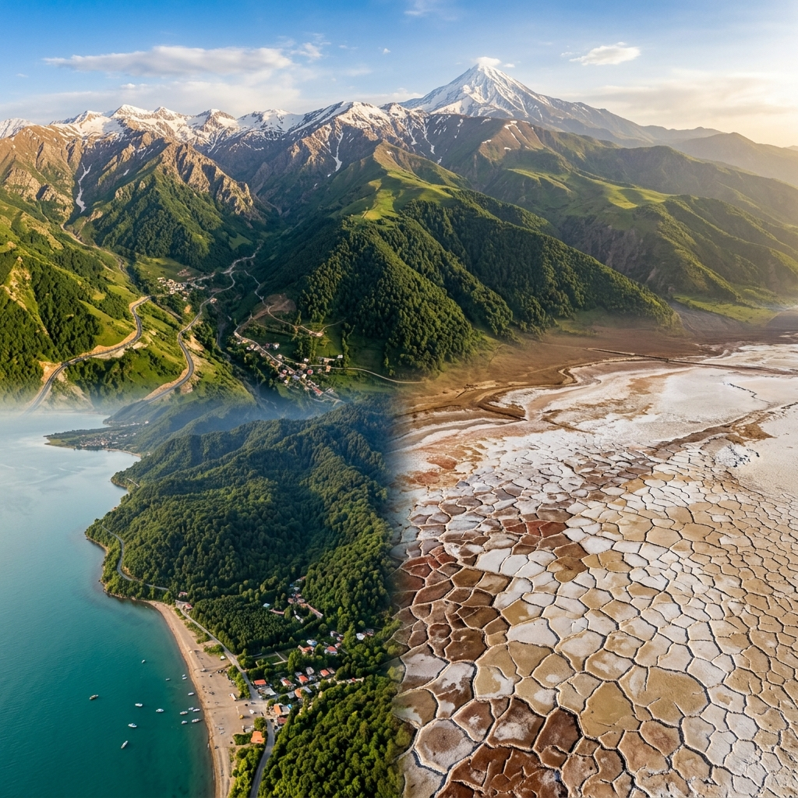
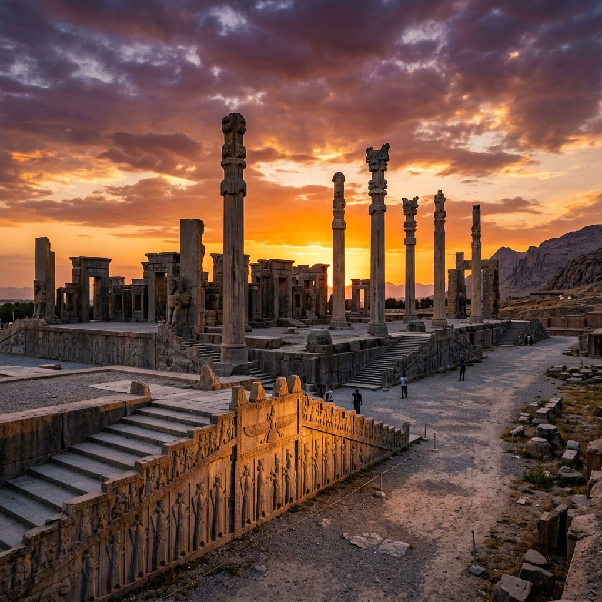
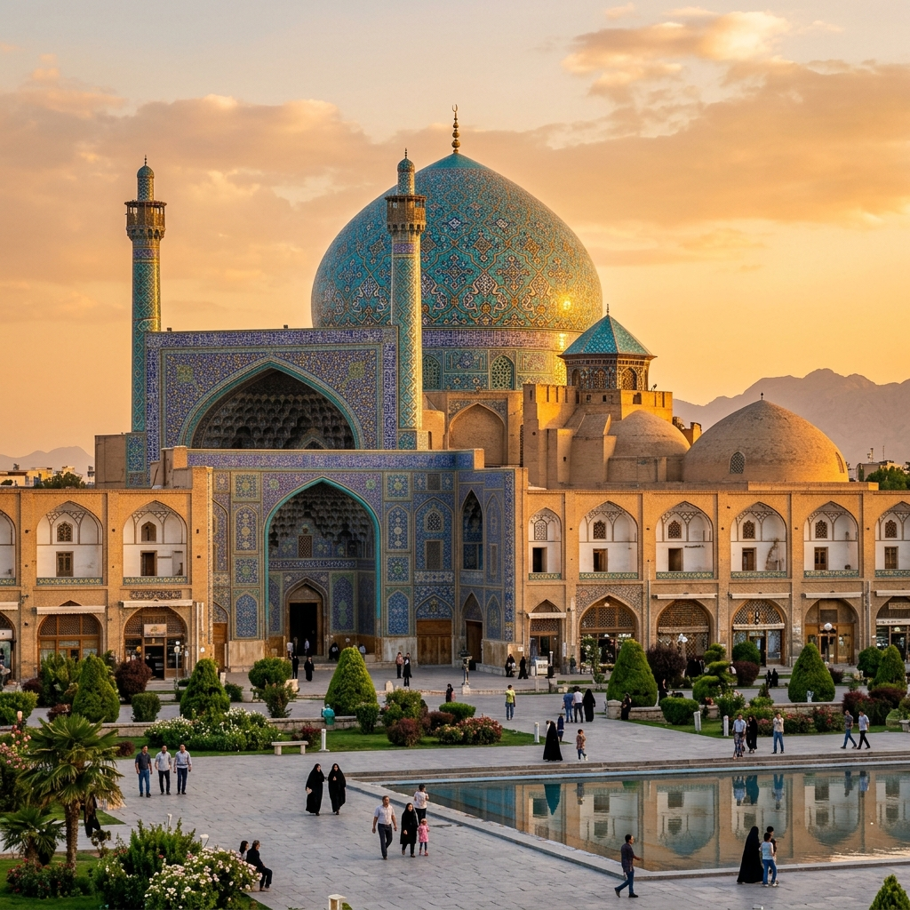

سرزمین کهن · مهد تمدن
ایران
سرزمینی با بیش از سههزار سال تاریخ مکتوب، خاستگاه یکی از بزرگترین امپراتوریهای جهان، و گهواره ادب، هنر و فلسفه بشری.
سرزمینی در قلب جهان
ایران در جنوبغربی آسیا و در قلب خاورمیانه قرار دارد. این کشور با مساحتی بالغ بر ۱٬۶۴۸٬۱۹۵ کیلومتر مربع، هفدهمین کشور بزرگ جهان است.
از شمال به دریای خزر و کوههای البرز، از جنوب به خلیج فارس و دریای عمان، از شرق به افغانستان و پاکستان، و از غرب به عراق و ترکیه محدود است.


از ماد تا امروز
ایران از نخستین خاستگاههای تمدن بشری است. حدود ۳۵۰۰ سال پیش از میلاد، تمدنهای پیشرفتهای در این سرزمین شکل گرفتند.
امپراتوری هخامنشی (۵۵۰–۳۳۰ ق.م) به رهبری کوروش بزرگ، اولین امپراتوری جهانی تاریخ بود که از هند تا مصر امتداد داشت و منشور کوروش اولین منشور حقوق بشر در تاریخ شناخته میشود.
پس از هخامنشیان، سلسلههای اشکانی و ساسانی ایران را به اوج شکوه رساندند. با ورود اسلام، ایران هویت فرهنگی خود را حفظ کرد و در قرون میانه مرکز علم، فلسفه و هنر جهان شد.
معماری که نفس را بند میآورد
هنر ایرانی یکی از غنیترین سنتهای هنری جهان است. از کاشیکاریهای فیروزهای اصفهان تا نقشبرجستههای تختجمشید، هر اثر داستانی از عظمت بشری دارد.
مسجد امام اصفهان با گنبد آبی فیروزهایاش، یکی از شاهکارهای معماری جهان است. باغهای ایرانی (پردیس) الهامبخش باغسازی در سراسر دنیا شدند.

فارسی؛ زبانی که دنیا را مسحور کرد
زبان فارسی یکی از کهنترین زبانهای زنده جهان است که قدمتش به بیش از ۲۵۰۰ سال میرسد. این زبان به خط فارسی-عربی نوشته میشود و زبان مادری حدود ۱۱۰ میلیون نفر در ایران، افغانستان و تاجیکستان است.
ادبیات فارسی یکی از غنیترین ادبیاتهای جهان است. شاعران ایرانی بر ادبیات عثمانی، هندی، و حتی اروپایی تأثیر عمیق گذاشتند.
بزرگان شعر و اندیشه ایران
عجایب ایران — ثبتشده در یونسکو
ایران با ۲۷ اثر ثبتشده در فهرست میراث جهانی یونسکو، یکی از ثروتمندترین کشورهای جهان از نظر میراث فرهنگی و طبیعی است.
هویتی که هزار سال مقاومت کرد
ایران با وجود تهاجمات مکرر — از اسکندر مقدونی تا اعراب، مغولها تا تیموریان — نه تنها هویت فرهنگی خود را حفظ کرد، بلکه مهاجمان را هم به تدریج ایرانی کرد. این ظرفیت شگفتانگیز «ایرانیسازی» نشانه عمق فرهنگ این ملت است.
نوروز — جشن بهار ایرانی — با قدمتی بیش از ۳۰۰۰ سال، در ۳۰۰ میلیون نفر در آسیای مرکزی، قفقاز، بالکان و خاورمیانه جشن گرفته میشود و در یونسکو ثبت شده است.
موسیقی ایرانی با دستگاههای هفتگانه، سینمای ایران با جوایز بینالمللی، شعر کلاسیک فارسی که در پنج قاره خوانده میشود — همه نشانههای یک فرهنگ زنده و پویاست.